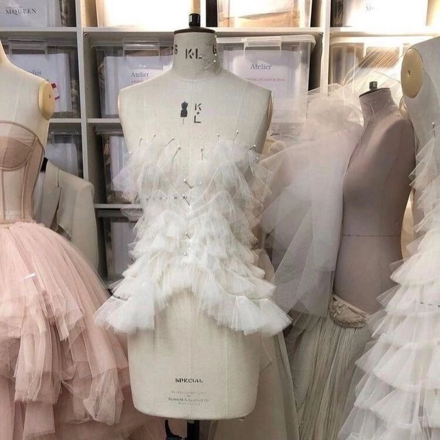
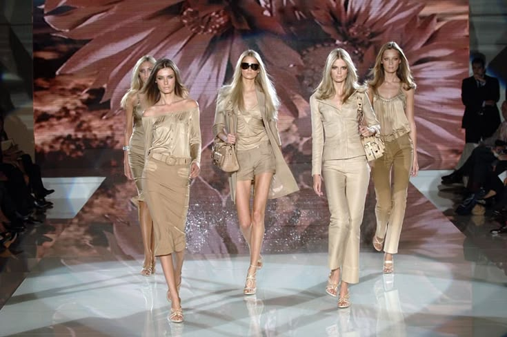

Estilismo e Coordenação de Moda
O curso de Estilismo e Coordenação de Moda ensina a criar looks, combinar cores, tecidos e acessórios, acompanhar tendências e desenvolver estilos únicos. Os alunos aprendem a transformar ideias em produções criativas, desenvolvendo habilidades para atuar no mundo da moda.
Desenho de Moda
Criação de croquis e desenhos de roupas.

Tecidos e Materiais
Tipos de tecidos, texturas e suas aplicações.

Tendências da Moda
Estudo das tendências, tecidos e novidades do mundo fashion.
